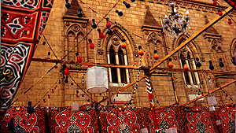

T
H
E
I
D
E
N
T
I
T
Y
G
A
M
E
|
Some
cities are famous for their buildings and landmarks. If you see
the Statue of Liberty in a photograph, you can easily guess that
the city in the picture is New York. But we want your picture to
be more intimate than that.
Are
there things in your surroundings which might give the other
students an idea about the city you live in? Try to find a
typical aspect or something particular about the city
(sidewalks, details of stores, people, residential building
entrances, street lights) which would remind you of your city if
you were living away from it. Of course you should not make it
too easy for them… no flags or written signs or famous
monuments in the picture.
An example from our mystery city:

|
|